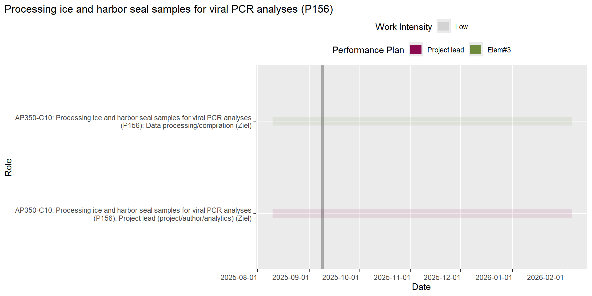
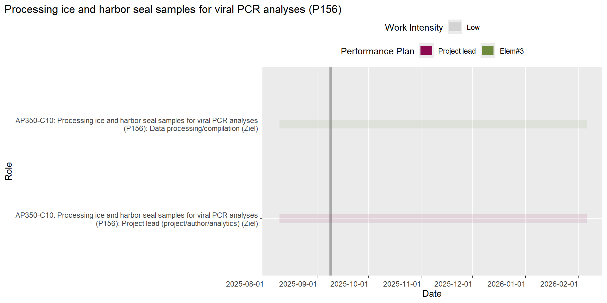
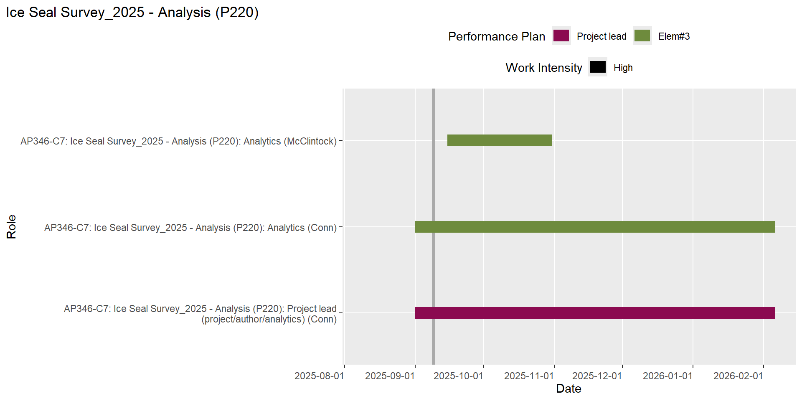
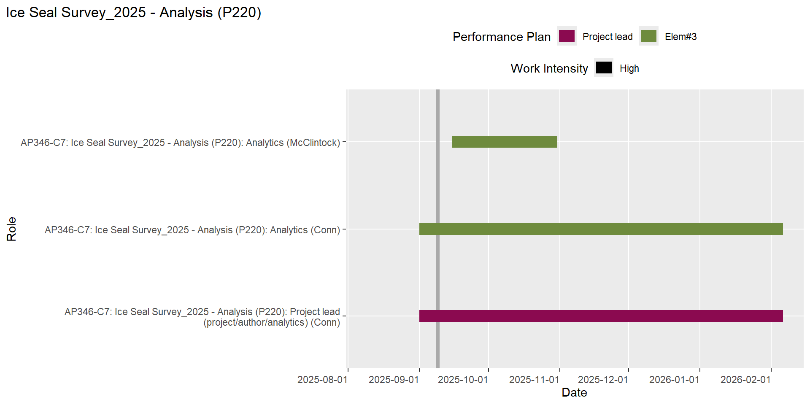
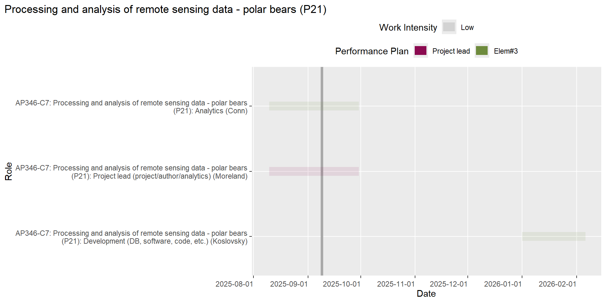
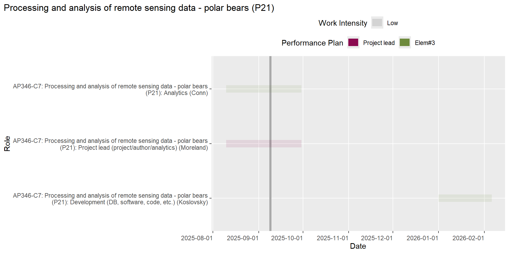

—Element #4—
AP342-C2: Harbor seals - Aleutian Islands harbor seal ecology
AP342-C3: Harbor seals - Abundance and trend analysis of harbor seal stocks
.. [Manuscript] AK Harbor Seals Abundance & Trends (P11)
.. .. Project lead (R631)
AP355-C13: USPAI - Uncrewed Surveys of Pinnipeds in the Aleutian Is.
.. [Report] USPAI project final report to UxSOC (P182)
.. .. Co-author, drafting (R813)
—Element #1—
AP999-C27: Other - Field gear and equipment management
.. Building 32 organization and safety (P160)
.. .. Project lead (R773)
.. Managing repair and maintenance of field equipment (P173)
.. .. Project lead (R793)
AP999-C32: Other - UAS project support
.. Maintaining UAS Pilot-in-Command (PIC) eligibility (P176)
.. .. Project co-lead (R799) - Training, proficency, currency, administration
—Element #3—
AP342-C1: Harbor seals - Aerial surveys of harbor seals in Alaska
.. 2020-2021 Aerial Survey Counts - Glacial (P7)
.. .. Data processing/compilation (R285) - Counting + post-counting work
.. 2024 Aerial Survey Counts - Glacial (P157)
.. .. Project lead (R784) - Enter field data, identify sites to count, update processing documentation
.. .. Data processing/compilation (R782) - Counting imagery
AP356-C14: UAS body condition - Phase III: UAS field tests, analysis and reporting
.. Process imagery of free-ranging seals at the marginal ice zone of the Bering Sea (P44)
.. .. Project lead (R820)
.. .. Data processing/compilation (R758) - Data entry into body condition DB
—Element #1—
AP342-C6: Harbor seals - Scientific support for management of harbor seals
.. Co-management of harbor seals with Alaska Native groups (e.g., BBNA and AMMC) (P195)
.. .. AKR, co-management, and NPFMC support (R874)
.. Support to AKRO for management of Alaskan harbor seals (P17)
.. .. AKR, co-management, and NPFMC support (R502)
AP346-C9: Ice seals - Scientific support for management of ice seals
.. Co-management of ice seals in Alaska with the ISC (P194)
.. .. AKR, co-management, and NPFMC support (R875) - Odd-numbered year, so AFSC will lead the January meeting.
.. Support to AKRO for management of ice seals in Alaska (P30)
.. .. AKR, co-management, and NPFMC support (R869)
AP356-C14: UAS body condition - Phase III: UAS field tests, analysis and reporting
.. Management of UAS Body Condition project (P187)
.. .. Project lead (R846)
—Element #3—
AP356-C14: UAS body condition - Phase III: UAS field tests, analysis and reporting
.. UAS Body Condition: Analysis (P185)
.. .. Project lead (R828)
—Element #4—
AP342-C6: Harbor seals - Scientific support for management of harbor seals
.. Co-management of harbor seals with Alaska Native groups (e.g., BBNA and AMMC) (P195)
.. .. Project co-lead (R872)
.. Support to AKRO for management of Alaskan harbor seals (P17)
.. .. Project lead (R633) - Periodic data calls, setting priorities, etc.
AP346-C9: Ice seals - Scientific support for management of ice seals
.. Co-management of ice seals in Alaska with the ISC (P194)
.. .. Project lead (R866)
.. ESA Recovery planning for ringed and bearded seals (P192)
.. .. Project co-lead (R857) - Planning and participaton in workshops (end date is a guess)
.. Support to AKRO for management of ice seals in Alaska (P30)
.. .. Project lead (R719) - Periodic data calls, setting priorities, etc.
.. [Manuscript] Adult bearded seal foraging habitat selection (P131)
.. .. Project lead (R667) - Compiling coauthor suggestions and developing a new manuscript
.. [Report] 2025 Alaska Ice Seal Research Plan (P196)
.. .. Co-author, other (graphics, editing, etc.) (R879) - Editing of final report
.. [Report] Complete an ESA 5-year status review for bearded seals (P63)
.. .. Project lead (R725) - Scheduling coauthor, responsibilites, editing, managing deadlines and changing needs of AKR
.. .. Lead author (R409) - Writing sections for Physical Habitat (sea ice) and summaries.
.. [Report] ESA recovery plans for ringed and bearded seals (P193)
.. .. Project co-lead (R863) - (end date is a guess)
.. .. Co-author, drafting (R862) - (end date is a guess)
AP356-C14: UAS body condition - Phase III: UAS field tests, analysis and reporting
.. [Presentation] UAS Body Condition - Final project report (P188)
.. .. Project lead (R847) - Presentation to UxS Advancing Innovative Research (AIR) Seminar Series
.. [Report] UAS Body Condition Final Grant Report (P62)
.. .. Project lead (R683) - Administration of final report
—Element #1—
AP346-C7: Ice seals - Aerial surveys of ice seals and polar bears
.. Ice Seal Survey_2024 - Bering Sea permits and permit reports (P110)
.. Ice Seal Survey_2025 - permits and permit reports (P112)
AP999-C33: Other - Cooperative Institutes
.. CICOES Supervision (P174)
.. .. Project lead (R794) - Budget tracking, travel requests, leave approval, cruise timesheets, etc.
—Element #2—
AP346-C7: Ice seals - Aerial surveys of ice seals and polar bears
.. Ice Seal Survey_2025 - planning (P111)
.. .. Fieldwork (preparations, logistics) (R835) - Coordinate with AOC and St Paul, AK airport manager on airport logistics
AP999-C35: Other - Work for other MML programs
.. Christman for CAEP: 2025 Bowhead Survey Planning (P190)
.. .. Fieldwork (preparations, logistics) (R853)
—Element #3—
AP342-C1: Harbor seals - Aerial surveys of harbor seals in Alaska
.. 2020-2021 Aerial Survey Counts - Glacial (P7)
.. .. Data processing/compilation (R753) - Counting COCOA imagery
.. 2024 Aerial Survey Counts - Glacial (P157)
.. .. Data processing/compilation (R783) - Counting imagery
.. .. Development (DB, software, code, etc.) (R785) - 2024 camera model development and re-post-processing
AP346-C7: Ice seals - Aerial surveys of ice seals and polar bears
.. Ice Seal Survey_2025 - planning (P111)
.. .. Development (camera models) (R839) - Generate and evaluate camera models for 30 deg config for Twin Otter and King Air
—Element #4—
AP342-C17: Harbor seals - Harbor seal reporting
.. AK Harbor Seals StoryMap (P186)
.. .. Project co-lead (R842)
AP342-C6: Harbor seals - Scientific support for management of harbor seals
.. Iliamna Lake Stock Designation (P86)
.. .. Project co-lead (R500) - Draft DIP documentation
AP355-C13: USPAI - Uncrewed Surveys of Pinnipeds in the Aleutian Is.
.. [Report] USPAI project final report to UxSOC (P182)
.. .. Co-author, other (graphics, editing, etc.) (R818)
—Element #3—
AP999-C30: Other - Statistical model development
.. CKMR Methods Development (P171)
.. .. Project lead (R789) - Simulation-based inference for CKMR
AP999-C35: Other - Work for other MML programs
.. Conn for CAEP: Participate in 2025 Bowhead planning meetings (P198)
.. .. Analytics support (R883) - Provided statictical advice for survey planning[COMPLETED]
—Element #4—
AP342-C2: Harbor seals - Aleutian Islands harbor seal ecology
AP346-C7: Ice seals - Aerial surveys of ice seals and polar bears
.. Processing and analysis of remote sensing data - polar bears (P21)
.. .. Analytics lead (R129) - Not exactly sure what this is
AP346-C8: Ice seals - Vessel-based research of ice seals
.. [Manuscript] Hematology and dive characteristics of ribbon and spotted seals (P92)
.. .. Analytics lead (R524)
AP346-C9: Ice seals - Scientific support for management of ice seals
.. [Manuscript] BOSS (Russia) (P141)
.. .. Project lead (R698) - Dependent on U.S. BOSS paper being available
.. [Manuscript] CKMR (P144)
.. .. Project lead (R703) - Revision submitted 10/2024
AP350-C10: Diet and physiology - Analyses of samples collected in the field
.. Mercury analyses for ice seal and harbor seal samples (P34)
.. .. Analytics lead (R206)
.. Serological analyses for ice seal and harbor seal samples (P32)
.. .. Analytics lead (R198)
.. .. Co-author, drafting (R302)
AP357-C11: Trophic roles - Trophic Roles of Ice Seals - RWP Proj
.. [Manuscript] Trophic roles of spotted seals in Alaskan Arctic marine ecosystems (P153)
.. .. Co-author, drafting (R605)
AP999-C30: Other - Statistical model development
.. CKMR Methods Development (P171)
.. .. Analytics lead (R788)
.. .. Lead author (R790) - switched to new project [manuscript][CANCELLED]
.. [Manuscript] Simulation-based Inference for CKMR (P172)
.. .. Project lead (R791) - Lead author
—Element #1—
AP346-C9: Ice seals - Scientific support for management of ice seals
.. ESA Recovery planning for ringed and bearded seals (P192)
.. .. NOAA/AFSC working group member (R858) - Participaton in workshops: bearded seal focus (end date is a guess)
AP355-C13: USPAI - Uncrewed Surveys of Pinnipeds in the Aleutian Is.
.. USPAI project management (P64)
.. .. Project lead (R689) - Lead project meetings, communications, and wrap-up activities
AP999-C16: Other - Procurement and shipping
.. Purchase Card Holder (P178)
.. .. Project co-lead (R804) - Training, maintaining eligibility, purchasing and required administration
—Element #4—
AP342-C2: Harbor seals - Aleutian Islands harbor seal ecology
AP346-C9: Ice seals - Scientific support for management of ice seals
.. [Report] Complete an ESA 5-year status review for bearded seals (P63)
.. .. Co-author, drafting (R412)
.. [Report] ESA recovery plans for ringed and bearded seals (P193)
.. .. Co-author, drafting (R864) - Bearded seal focus (end date is a guess)
AP355-C13: USPAI - Uncrewed Surveys of Pinnipeds in the Aleutian Is.
.. [Presentation] Present USPAI project results at the 2024 SMM conference (P184)
.. .. Project lead (R816) - Edit poster and present at the SMM conference in Perth, Australia
.. [Presentation] USPAI project post-mission review with UxSOC (P183)
.. .. Project lead (R815) - Draft and present the post-mission review slideshow to the UxSOC
.. [Report] USPAI project final report to UxSOC (P182)
.. .. Project lead (R810) - Lead author
—Element #3—
AP999-C35: Other - Work for other MML programs
.. Conn for CAEP: Participate in 2025 Bowhead planning meetings (P198)
.. .. Project lead (R882)
—Element #4—
AP342-C2: Harbor seals - Aleutian Islands harbor seal ecology
AP346-C9: Ice seals - Scientific support for management of ice seals
.. Co-management of ice seals in Alaska with the ISC (P194)
.. .. Project co-lead (R876) - Barb Mahoney (AKR) and Andy Von Duyke (NSB/ISC).
.. ESA Recovery planning for ringed and bearded seals (P192)
.. .. Project lead (R856) - Jenna Malek: Ringed, Caroline Cummings: Bearded (end date is a guess)
.. [Report] ESA recovery plans for ringed and bearded seals (P193)
.. .. Project lead (R861) - Jenna Malek: Ringed, Caroline Cummings: Bearded (end date is a guess)
.. .. Lead author (R860) - Jenna Malek: Ringed, Caroline Cummings: Bearded (end date is a guess)
—Element #1—
AP342-C6: Harbor seals - Scientific support for management of harbor seals
.. Support to AKRO for management of Alaskan harbor seals (P17)
.. .. AKR, co-management, and NPFMC support (R867)
AP999-C16: Other - Procurement and shipping
.. Purchase Card Holder (P178)
.. .. Project co-lead (R805) - Training, maintaining eligibility, purchasing and required administration
—Element #4—
AP342-C3: Harbor seals - Abundance and trend analysis of harbor seal stocks
.. [Manuscript] AK Harbor Seals Abundance & Trends (P11)
.. .. Co-author, drafting (R530)
—Element #1—
AP999-C28: Other - Working group memberships
.. AFSC TIDE (P162)
.. .. NOAA/AFSC working group member (R749) - Member; I&A subcommittee; leadership committee (recorder)
.. NOAA F-SAT/I (P163)
.. .. NOAA/AFSC working group member (R751) - Minimum 2-year rotation in membership
—Element #3—
AP342-C1: Harbor seals - Aerial surveys of harbor seals in Alaska
.. 2020-2021 Aerial Survey Counts - Glacial (P7)
.. .. Project co-lead (R623) - Support for new counting process; develop workflow documentation
.. .. Development (DB, software, code, etc.) (R755) - Final QA/QC work for COCOA sites
.. 2024 Aerial Survey Counts - Glacial (P157)
.. .. Project co-lead (R730) - Data import and processing for 2024 data
.. .. Data management (including GIS) (R757) - Data QA/QC and support after counting is completed
AP346-C7: Ice seals - Aerial surveys of ice seals and polar bears
.. Ice Seal Survey_2024 - Bering Sea processing and analysis (P109)
.. .. Data management (including GIS) (R547) - Any remaining work to finalize dataset
AP346-C8: Ice seals - Vessel-based research of ice seals
.. Telemetry data management improvements (P28)
.. .. Project lead (R613) - Oversee updates to data workflow
AP356-C14: UAS body condition - Phase III: UAS field tests, analysis and reporting
.. Process imagery of free-ranging seals at the marginal ice zone of the Bering Sea (P44)
.. .. Data management (including GIS) (R314) - Set up DB structure to accommodate data from M30T; finalize field data
.. UAS Body Condition: Analysis (P185)
.. .. Data management (including GIS) (R826) - Database support for analytical query[COMPLETED]
AP999-C25: Other - Open science/software
.. pepDataConnect (P165)
.. .. Project lead (R764) - Prioritize development of code for app/projects
.. .. Development (DB, software, code, etc.) (R765) - Code development for app
—Element #4—
AP342-C17: Harbor seals - Harbor seal reporting
.. AK Harbor Seals Interactive Application (P12)
.. .. Project lead (R615) - Complete work to make application publically available
AP355-C13: USPAI - Uncrewed Surveys of Pinnipeds in the Aleutian Is.
.. [Report] USPAI project final report to UxSOC (P182)
.. .. Co-author, drafting (R812)
AP356-C14: UAS body condition - Phase III: UAS field tests, analysis and reporting
.. [Report] UAS Body Condition Final Grant Report (P62)
.. .. Co-author, drafting (R407) - Final grant report
AP357-C11: Trophic roles - Trophic Roles of Ice Seals - RWP Proj
.. [Manuscript] Trophic roles of spotted seals in Alaskan Arctic marine ecosystems (P153)
.. .. Co-author, drafting (R607) - Manuscript reviews
AP999-C28: Other - Working group memberships
.. NOAA Enterprise Data Management Workshop (P168)
.. .. Workshop/conference presenter/organizer (R779) - Member of reporting subteam for conference organization
—Element #1—
AP346-C9: Ice seals - Scientific support for management of ice seals
.. ESA Recovery planning for ringed and bearded seals (P192)
.. .. NOAA/AFSC working group member (R859) - Participaton in workshops, ringed seal focus (end date is a guess)
AP999-C32: Other - UAS project support
.. Maintaining UAS Pilot-in-Command (PIC) eligibility (P176)
.. .. Project co-lead (R798) - Training, proficency, currency, administration
—Element #4—
AP346-C9: Ice seals - Scientific support for management of ice seals
.. [Manuscript] Ringed seal & polar bear demographic modeling (P134)
.. .. Project lead (R681) - Integrating single-species models together & with environmental data, hindcasting, forecasting
.. [Manuscript] Ringed seal haul-out & emergence (P133)
.. .. Project lead (R675) - Submitting ms to journal and making revisions during the peer review process
.. [Report] Complete an ESA 5-year status review for bearded seals (P63)
.. .. Co-author, drafting (R830) - Writing sections for taxonomy, genetics, DPS summaries
.. [Report] ESA recovery plans for ringed and bearded seals (P193)
.. .. Co-author, drafting (R865) - Ringed seal focus (end date is a guess)
—Element #1—
AP342-C6: Harbor seals - Scientific support for management of harbor seals
.. Co-management of harbor seals with Alaska Native groups (e.g., BBNA and AMMC) (P195)
.. .. AKR, co-management, and NPFMC support (R873)
.. Support to AKRO for management of Alaskan harbor seals (P17)
.. .. AKR, co-management, and NPFMC support (R114)
—Element #3—
AP346-C8: Ice seals - Vessel-based research of ice seals
.. Telemetry data management improvements (P28)
.. .. Development (DB, software, code, etc.) (R172) - Update Shiny app for reviewing tag start/end dates
—Element #4—
AP342-C2: Harbor seals - Aleutian Islands harbor seal ecology
AP342-C3: Harbor seals - Abundance and trend analysis of harbor seal stocks
.. [Manuscript] AK Harbor Seals Abundance & Trends (P11)
.. .. Co-author, drafting (R74)
AP342-C6: Harbor seals - Scientific support for management of harbor seals
.. Co-management of harbor seals with Alaska Native groups (e.g., BBNA and AMMC) (P195)
.. .. Project lead (R871)
.. Support to AKRO for management of Alaskan harbor seals (P17)
.. .. Project co-lead (R345) - Periodic data calls, setting priorities, etc.
—Element #4—
AP342-C3: Harbor seals - Abundance and trend analysis of harbor seal stocks
.. [Manuscript] AK Harbor Seals Abundance & Trends (P11)
.. .. Co-author, drafting (R766)
AP350-C10: Diet and physiology - Analyses of samples collected in the field
.. Mercury analyses for ice seal and harbor seal samples (P34)
.. .. Analytics lead (R300)
—Element #4—
AP346-C9: Ice seals - Scientific support for management of ice seals
.. [Report] 2025 Alaska Ice Seal Research Plan (P196)
.. .. Co-author, drafting (R880) - Contribute/update section fot 2025 aerial surveys.
AP355-C13: USPAI - Uncrewed Surveys of Pinnipeds in the Aleutian Is.
.. [Report] USPAI project final report to UxSOC (P182)
.. .. Co-author, drafting (R811)
—Element #1—
AP342-C6: Harbor seals - Scientific support for management of harbor seals
.. Support to AKRO for management of Alaskan harbor seals (P17)
.. .. AKR, co-management, and NPFMC support (R115)
AP999-C16: Other - Procurement and shipping
.. Contract Officer’s Representative (COR) (P179)
.. .. Project lead (R802) - Training and Admin for maintinaing eligibility
.. .. COR (Contract Officer Representative) (R803) - Contract development and administration
AP999-C32: Other - UAS project support
.. Maintaining UAS Pilot-in-Command (PIC) eligibility (P176)
.. .. Project lead (R797) - Training, proficency, currency, administration
.. UAS Mission Commander duties (P175)
.. .. Project lead (R795)
—Element #3—
AP342-C6: Harbor seals - Scientific support for management of harbor seals
.. Support to AKRO for management of Alaskan harbor seals (P17)
.. .. Data management (including GIS) (R113)
—Element #4—
AP342-C17: Harbor seals - Harbor seal reporting
.. AK Harbor Seals StoryMap (P186)
.. .. Project lead (R843)
AP342-C3: Harbor seals - Abundance and trend analysis of harbor seal stocks
.. [Manuscript] Abundance, Trends, and Distribution of Harbor Seals in the Pribilof Islands (P78)
.. .. Project lead (R669)
AP356-C14: UAS body condition - Phase III: UAS field tests, analysis and reporting
.. [Report] UAS Body Condition Final Grant Report (P62)
.. .. Co-author, other (graphics, editing, etc.) (R404)
—Element #4—
AP342-C3: Harbor seals - Abundance and trend analysis of harbor seal stocks
.. [Manuscript] AK Harbor Seals Abundance & Trends (P11)
.. .. Co-author, drafting (R436)
—Element #3—
AP342-C1: Harbor seals - Aerial surveys of harbor seals in Alaska
.. 2020-2021 Aerial Survey Counts - Glacial (P7)
.. .. Data processing/compilation (R754) - Counting COCOA imagery
.. 2024 Aerial Survey Counts - Glacial (P157)
.. .. Data processing/compilation (R786) - Counting imagery
—Element #4—
AP355-C13: USPAI - Uncrewed Surveys of Pinnipeds in the Aleutian Is.
.. [Report] USPAI project final report to UxSOC (P182)
.. .. Co-author, other (graphics, editing, etc.) (R814)
—Element #1—
AP999-C16: Other - Procurement and shipping
.. Purchase Card Holder (P178)
.. .. Project lead (R806) - Training, maintaining eligibility, purchasing and required administration
.. Shipping Hazardous materials (P177)
.. .. Project lead (R801) - Maintaining eligibility, training and administration required for shipping
AP999-C27: Other - Field gear and equipment management
.. PEP Inventory Database (P161)
.. .. Project lead (R741) - Keep PEP Inventory DB up to date
.. Sunflower system tracking (P159)
.. .. Project lead (R792)
AP999-C32: Other - UAS project support
.. Maintaining UAS Pilot-in-Command (PIC) eligibility (P176)
.. .. Project co-lead (R800) - Training, proficency, currency, administration
—Element #3—
AP350-C10: Diet and physiology - Analyses of samples collected in the field
.. Genetic analysis of ice seal and harbor seal samples (P60)
.. .. Project lead (R670) - Work with SWFSC to complete genetics analyses for samples we sent
.. Mercury analyses for ice seal and harbor seal samples (P34)
.. .. Project lead (R645) - Work with Lorrie Rea to analyze ice and harbor seal samples for THg
.. Serological analyses for ice seal and harbor seal samples (P32)
.. .. Project lead (R646) - Work with collaborators to get samples analyzed for pathogens with serology testing; obtain results
.. Stable isotope analyses for ice seal and harbor seal samples (P155)
.. .. Project lead (R728) - Work with Lorrie Rea to analyze ice and harbor seal samples for stable isotopes
.. Viral PCR analyses for ice seal and harbor seal samples (P156)
.. .. Project lead (R729) - Work with collaborators to do PCR analyses for pathogens for ice and harbor seal samples
.. [Manuscript] Stable isotope analysis of ice seal and harbor seal samples (P33)
.. .. Data processing/compilation (R360) - working with Lorrie to analyze whisker, hair, whole blood samples
AP356-C14: UAS body condition - Phase III: UAS field tests, analysis and reporting
.. Process imagery of free-ranging seals at the marginal ice zone of the Bering Sea (P44)
.. .. Data processing/compilation (R759) - Data verification in body condition DB
—Element #4—
AP346-C8: Ice seals - Vessel-based research of ice seals
.. [Manuscript] Food habits of ribbon and spotted seals (P139)
.. .. Project lead (R691)
.. .. Lead author (R600) - update draft for publication
.. [Manuscript] Hematology and dive characteristics of ribbon and spotted seals (P92)
.. .. Project lead (R721)
.. .. Lead author (R526) - update draft for publication
.. [Report] Field report for the 2024 Norseman II cruise (P180)
.. .. Project lead (R807) - Write field report for 2024 Norseman II ice seal cruise
AP346-C9: Ice seals - Scientific support for management of ice seals
.. [Report] 2025 Alaska Ice Seal Research Plan (P196)
.. .. Project lead (R877) - Working with AFSC Publications to produce report in time for ISC meeting.
.. .. Lead author (R878) - Collecting submissions from coauthors, assembling and updating.
.. [Report] Complete an ESA 5-year status review for bearded seals (P63)
.. .. Co-author, drafting (R413) - Writing sections for diet/foraging ecology, disease/parasites/predation, contaminants
AP350-C10: Diet and physiology - Analyses of samples collected in the field
.. Serological analyses for ice seal and harbor seal samples (P32)
.. .. Lead author (R301) - Draft of serology paper; waiting for results from Tracey; paper on hold since retracted in 2020
AP356-C14: UAS body condition - Phase III: UAS field tests, analysis and reporting
.. [Report] UAS Body Condition Final Grant Report (P62)
.. .. Co-author, drafting (R403) - Final grant report


 
 


 
 


 
